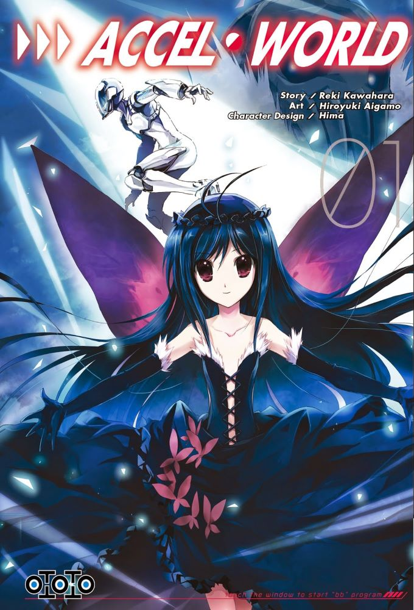

図書館
Toshokan
Selection de 12 Manga

Accel World - tome 1
- Éditeur VF : Ototo (Ototo - Shonen)
- Éditeur VO : ASCII Media Works
- Date de parution VO : 27/07/2011
- Date de parution VF : 22/05/2015
- Prix : 6.99 € / 599 ¥
- Nombre de pages : 192
- Illustrations : N&B
- Code ISBN : 9780316376730
- Scénariste : Kawahara Reki
- Dessinateur : Aigamo Hiroyuki
- Type : Shonen
- Genres : Action - Drame - Romance - School Life - Science-fiction
- Résumé :
Dans les années 2056, le monde est devenu totalement dépendant de toutes les technologies. Haruyuki Arita, étudiant et passionné par son jeu de squash sur Neuro-linker, n'en décroche que pour les cours. Persécuté par les autres en raison de son obésité, il n'a pas vraiment d'ami. Un jour comme les autres, une dénommée Kuroyukihime lui fait une proposition : aller encore plus vite. Curieux, Arita accepte, et accède à un programme sur-développé, le Burst-link, lui permettant d'accroître ses capacités mentales. Le voila parti pour un voyage inoubliable !